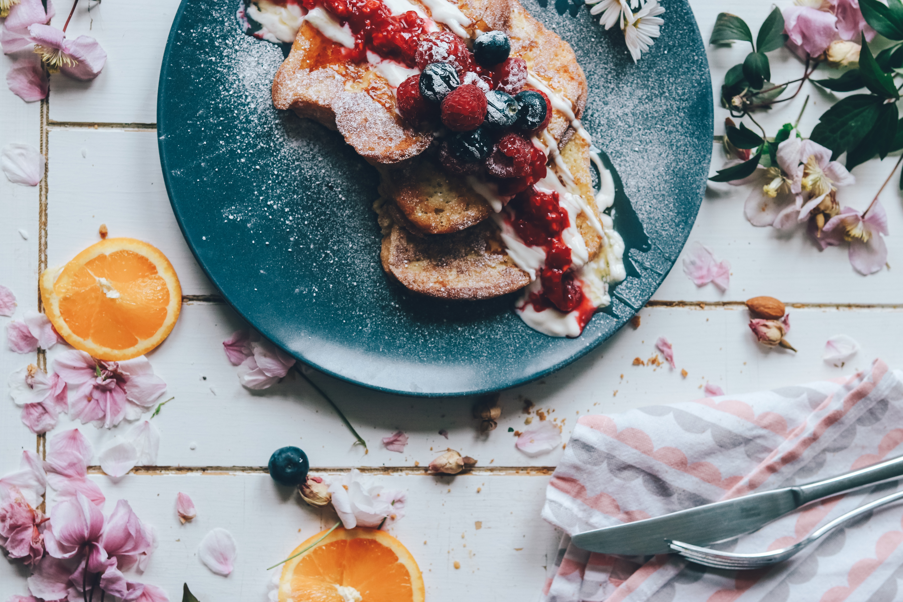

French Toast Recipe

- French Toast
- Bread coated in egg,milk, and then fried.
Ingredients
- 1 teaspoon of ground cinnamon
- 1/4 teaspoon of ground nutmeg
- 2 tablespoons of sugar
- 4 tablespoons of butter
- 4 brown eggs
- 1/4 cup of whole milk
- 1/2 teaspoon of vanilla extract
- 8 slices of Texas toast bread
- 1/2 cup of warmed maple syrup
Step by Step
- In a small bowl combine cinnamon, nutmeg, and sugar. Set aside briefly.
- Melt butter on a skillet over medium heat.
- Whisk together cinnamon mixture with the eggs, milk, and vanilla extract. Pour it all into a shallow container such as a pie plate.
- Coat each bread slice on both sides with the mixture.
- Fry slices until golden brown on both sides.
- Serve it with warm syrup.
- For a better tasting toast, sprinkle it with powdered sugar and top it off with berries and strawberries. Enjoy!